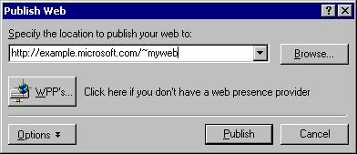
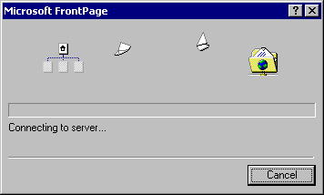

| ||
When you publish your Web site on the World Wide Web -- or your company intranet -- FrontPage automatically verifies your hyperlinks, the addresses of your pages, and the paths to your files.
Note If you do not want to publish the Millennium Celebration Web to your Web server, read this procedure for reference only, without actually completing the steps.
To publish the Millennium Celebration Web
FrontPage displays the Publish Web dialog box. Here, you specify the location on the World Wide Web or your corporate intranet to which you want to publish your Web site. Your Internet service provider can tell you this information.
You need Internet access through an Internet service provider before you can publish your Web site to the World Wide Web. If you want to sign on with a Web Presence Provider that can host FrontPage-enabled Web sites, click the WPPs button in the Publish Web dialog box.

FrontPage publishes the current Web site from your computer to the World Wide Web or intranet Web server you specified.
If FrontPage detects that you are publishing to a Web server that does not support the FrontPage Server Extensions, it will publish the current Web site via the FTP file transfer protocol.
If the Web server to which you are publishing your Web sites has the FrontPage Server Extensions installed, your Web sites will have full functionality of FrontPage-based components and Web scripts that you may have inserted on your pages.
Publishing Web sites to a Web server that does not have the FrontPage Server Extensions installed may disable some functionality contained on your pages, such as the feedback form you added. FrontPage will display informational messages during the publication process to alert you of such conditions.
During the publishing process, FrontPage displays a progress bar to indicate how much time is required to transfer your Web site to the target Web server.

The speed at which FrontPage publishes your Web site depends on your connection speed, as well as the number and complexity of the pages and files in your Web site.
When FrontPage has successfully published your Web site, it provides a hyperlink to your new Web site in the confirmation dialog box. Click the link to open the published Web site in your Web browser.
Congratulations, you have successfully completed the FrontPage Tutorial. You are now ready to create and publish your very own FrontPage-based Web sites.
Did you find this material useful? Gripes? Compliments? Suggestions for other articles? Write us!
© 1999 Microsoft Corporation. All rights reserved. Terms of use.